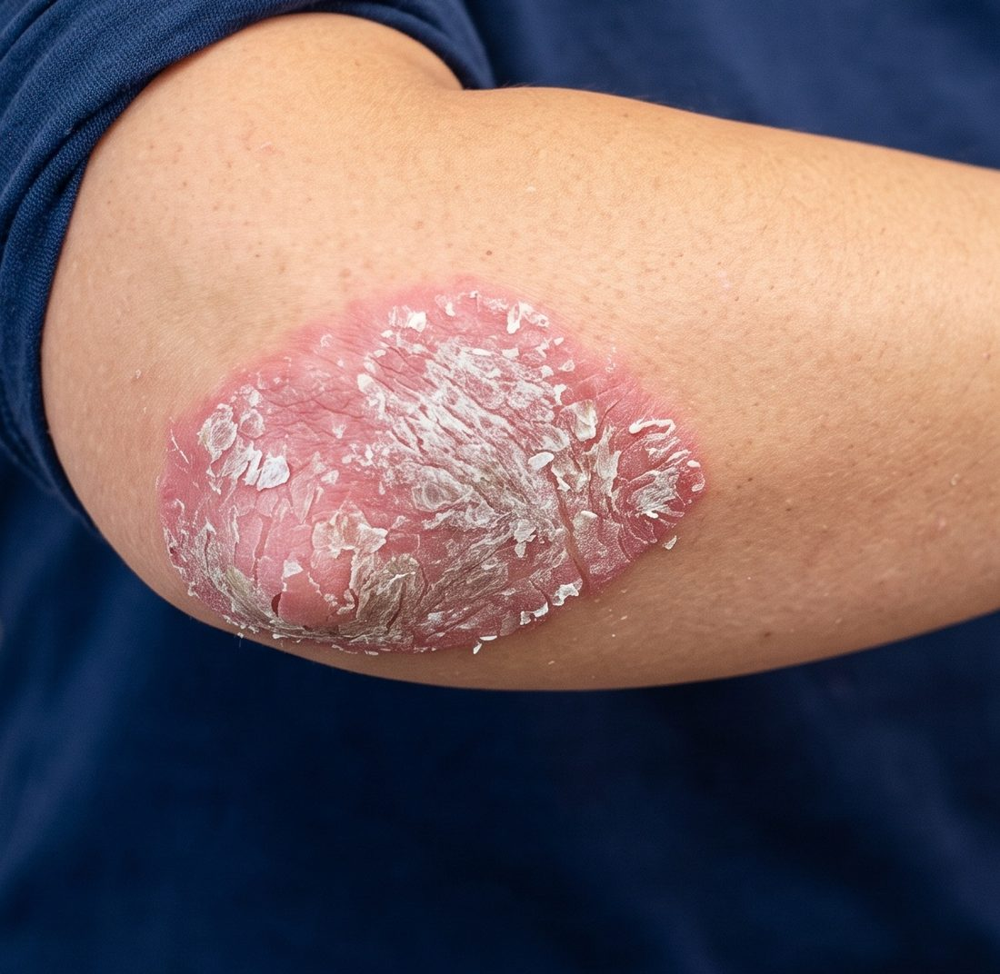
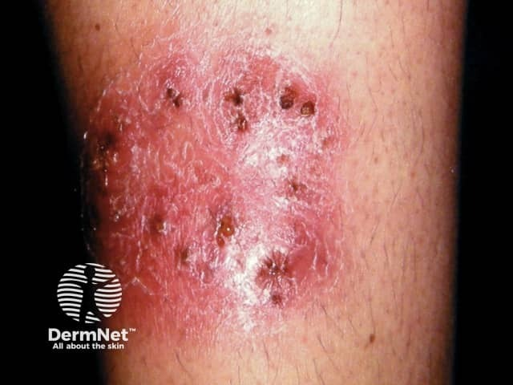
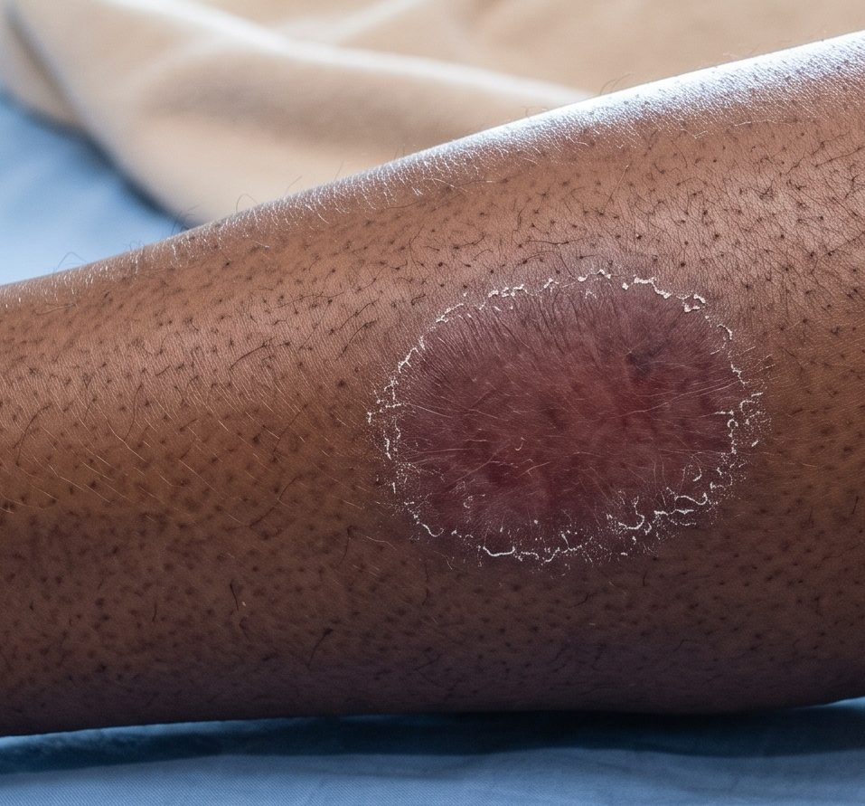
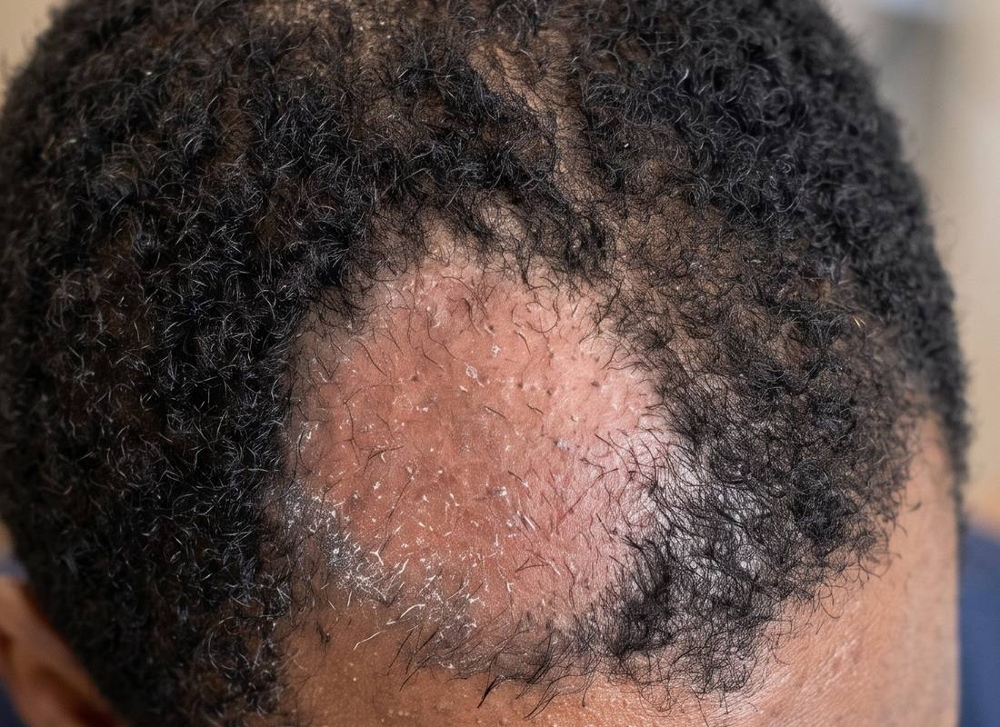

FROM IMAGE → EVIDENCE → CLINICAL JUDGMENT
الجزء الأول بنى طريقة التفكير. الجزء الثاني ينزّلها على أدوات جلدية حقيقية — نجربها، نقارنها، ندقّقها، وفي الآخر نطلع بمنتج مهني جاهز.
دي الأطر اللي بقت ملكك. اليوم كل واحد فيها بيتحوّل من مفهوم إلى إجراء على أداة حقيقية.
ده كان واجب الجزء الأول — النشاط 05. مش حنسيبه ورا؛ حنشتغل عليه النهارده كأداة عمل حقيقية.
| الوحدة | الموضوع | الزمن |
|---|---|---|
| 1 | يرى أم يفهم؟ — الأداة الأولى | 25 د |
| 2 | من الصورة إلى التشخيص التفريقي | 20 د |
| 3 | معركة الذكاء الاصطناعي | 30 د |
| 4 | خريطة الذكاء الاصطناعي في الجلدية | 20 د |
| 5 | مختبر الفشل | 15 د |
| 6 | دقّق ولا تثق | 15 د |
| ب | إضافي — ابنِ عرضًا احترافيًا بأدوات مجانية | 30 د |
| — | وقت مرن — تسجيل، مشاكل نت، نقاش، أسئلة، استراحة | 25 د |
أخطر خلط في أدوات الجلدية: إننا نسمّي كل حاجة "تشخيص". في الحقيقة قدامنا ثلاث قدرات مختلفة تمامًا — ولكل واحدة استخدام وحدود.
لازم تعرف أي قدرة بالظبط قدامك قبل ما تحكم على المخرج. نفس الصورة تدخل أربع أنظمة وتطلع بأربع أنواع مخرجات مختلفة في طبيعتها — ومعايير الحكم على كل نوع مختلفة.
أغلب الناس بتفتح الأداة وتسأل فورًا. العادة دي بتقلب الترتيب — وبتخلّي الأداة تملأ فراغاتك بافتراضات إنت ما قلتهاش.
نبدأ بيها لأنها بتوضّح الفرق بين الاسترجاع والتشخيص بشكل عملي، ولأن عندها دليل منشور — وده نادر في المجال ده.
| البند | التفصيل |
|---|---|
| القدرة | استرجاع بصري وتصنيف — image-based retrieval / classification |
| المدخل | صورة سريرية للآفة |
| المخرج | قائمة احتمالات مرتّبة مع صور مرجعية |
| التكلفة | مجاني — تطبيق موبايل على Android وiOS |
| الوصول من ليبيا | متاح — لكن يحتاج تثبيت التطبيق قبل المحاضرة |
| الدليل | تجربة عشوائية محكّمة منشورة — أول خوارزمية جلدية تثبت تحسين دقة الأطباء غير المتخصصين |
| الحد الأساسي | الصورة وحدها بلا سياق سريري — ما يعرفش المدة ولا الأعراض ولا الأدوية |
| متى لا تستخدمها | كمصدر وحيد لقرار استئصال أو خزعة |
معظم أدوات الجلدية بتعرض أرقام دقة من الشركة نفسها. القليل جدًا منها اتحطّ في تجربة عشوائية محكّمة.

| البند | المعطى |
|---|---|
| العمر والجنس | أنثى، 27 سنة |
| الموقع | الوجه الباسط للمرفقين والركبتين، وفروة الرأس |
| المدة | 8 شهور، بتزيد شتاءً |
| الأعراض | حكة خفيفة، تقشّر فضّي، بدون ألم |
| الأدوية | لا شيء منتظم — استخدمت كريم مرطّب فقط طوال الثمن شهور |
| التاريخ | الأب عنده حالة جلدية مزمنة مشابهة غير مشخّصة |
| الفحص | إصابة واسعة على الأسطح الباسطة — لويحات متعددة محدّدة الحواف مع تقشّر فضّي سميك |
دي أهم دقايق في الوحدة. لو شفت مخرج الأداة قبل ما تفكّر، تفكيرك حيتلوّن بيها ومش حتقدر ترجع.
قبل ما ترفع أي صورة لأي أداة، عدّي على العشرة دول. أغلب "أخطاء الذكاء الاصطناعي" اللي بتشوفها في الحقيقة أخطاء تصوير.
دلوقتي عندنا ثلاث نسخ من التفكير في نفس الحالة. المقارنة بينهم هي الدرس — مش أي واحدة "صح".
في الوحدة اللي فاتت الأداة شافت الصورة بس. دلوقتي حنشوف شنو بيحصل لما ندخل أداة بتسأل أسئلة سريرية — وشنو بيحصل لما نغيّر كمية المعلومة اللي بندّيها.
بتجمع معلومات الصورة مع السياق السريري لدعم بناء تشخيص تفريقي منظّم — يعني ما بتكتفيش بالصورة، بتسألك أسئلة سريرية كمان.
| البند | التفصيل |
|---|---|
| القدرة | دعم قرار سريري — clinical decision support + تحليل صورة |
| المدخل | صورة + إجابات على أسئلة سريرية موجّهة |
| المخرج | تشخيص تفريقي مبني، مع مكتبة صور ومحتوى سريري |
| التكلفة | فيه تجربة مجانية — مدتها بتختلف حسب المنتج والباقة، وبعض الإضافات بلا تجربة. افتح صفحة التسعير قبل المحاضرة. |
| الوصول من ليبيا | التجربة تحتاج تسجيل — سجّل قبل المحاضرة بيوم |
| أنواع البشرة | مكتبة صور واسعة عبر أنواع Fitzpatrick المختلفة |
| الحد الأساسي | غير مجانية على المدى الطويل — والتجربة تنتهي |

| البند | المعطى |
|---|---|
| العمر والجنس | ذكر، 44 سنة |
| الموقع | الوجه الأمامي للساق اليمنى — آفة واحدة فقط |
| المدة | 7 أسابيع، بتكبر ببطء |
| الأعراض | حكة شديدة، أسوأ بالليل — بيهرش لدرجة النزيف أحيانًا |
| الوصف | لويحة حمامية محدّدة الحواف مع تقشّر، وجواها قشور داكنة متعددة |
| التاريخ | مفيش آفات في أي مكان تاني · مفيش تاريخ عائلي · شغل بيتطلب وقوف طويل |
| الأدوية | مرطّب + كريم من الصيدلية من 3 أسابيع — بلا تحسّن |
ده إثبات عملي لمبدأ الجزء الأول: جودة المخرج بتتبع جودة المدخل. شغّل نفس الحالة ثلاث مرات وسجّل الفرق.
ده البرومبت اللي بتلصقه في ChatGPT أو Gemini مع الصورة. لاحظ إن كل حرف من PRIME ليه سطر.
P — You are a consultant dermatologist reviewing a lesion with a colleague.
R — Do NOT give me a single diagnosis. Build a ranked differential and
tell me what would move each item up or down the list.
I — Output exactly three sections:
1. What you can determine from the image alone
2. What you CANNOT determine from an image and must ask me
3. Ranked differential with the discriminating feature for each
M — Case: 44-year-old man. Single well-demarcated erythematous
plaque, anterior right lower leg, 7 weeks, slowly enlarging.
SEVERE ITCH, worse at night, scratched to bleeding at times.
Scale present, with several dark crusted puncta within the plaque.
No lesions elsewhere. No family history. Job involves prolonged
standing. Emollient and a pharmacy cream for 3 weeks, no benefit.
E — Success = I finish knowing exactly which additional information
or investigation would change my management decision today.
Flag explicitly anything you are uncertain about.
| الجولة | المدخل | اللي بيحصل عادة في المخرج |
|---|---|---|
| 1 | صورة فقط | قائمة عامة واسعة، بلا ترتيب مبني على خطورة، وبلا أسئلة متابعة |
| 2 | صورة + سياق حر | ترتيب أفضل، لكن الأداة بتملأ الفراغات بافتراضات ما قلتهاش |
| 3 | صورة + PRIME | فصل واضح بين المعروف والمجهول، وأسئلة متابعة محددة، وإقرار بعدم اليقين |
أهم تمرين في الجزء الثاني كله. حناخد حالة واحدة ونشغّلها على ثلاثة أنظمة مختلفة — والسؤال مش مين جاب التشخيص صح.
لو حوّلنا التمرين لمسابقة دقة، حنطلع بأداة "فائزة" ونثق فيها — وده بالظبط الفخ. الهدف إننا نفهم طبيعة كل نظام.
مفاجأة مفيدة: Aysa من نفس الشركة اللي عاملة VisualDx — لكنها موجّهة للمستهلك مش للطبيب. والفرق ده هو الدرس.
| البند | التفصيل |
|---|---|
| القدرة | فاحص أعراض جلدية بالصورة — consumer symptom checker |
| المستخدم المقصود | المريض، مش الطبيب — نقطة حاسمة في التدقيق |
| قاعدة الصور | [VENDOR] أكثر من 120 ألف صورة طبية · حوالي 200 حالة · كل أنواع Fitzpatrick |
| أنواع البشرة | [VENDOR] الشركة بتذكر تغطية عبر أنواع Fitzpatrick المختلفة — قيّم الدليل بنفسك لكل استخدام |
| التكلفة | [VERIFY] مجانية لفترة تعريفية ثم اشتراك سنوي رمزي — تأكّد قبل المحاضرة |
| الدليل | [EVIDENCE] دراسة مقطعية منشورة 2024 على 700 مريض — الأرقام في الشريحة الجاية |
[EVIDENCE] دراسة مقطعية منشورة في JMIR Dermatology سنة 2024، على 700 مريض، لأداة Aysa تحديدًا. الرقمين دول جنب بعض بيعلّموك إزاي تقرأ أي رقم أداء.

| البند | المعطى |
|---|---|
| العمر والجنس | أنثى، 41 سنة |
| نوع البشرة | Fitzpatrick V — بشرة داكنة |
| الموقع | الساق اليمنى، سطح واحد |
| المدة | 3 أسابيع، بتتوسّع تدريجيًا |
| الأعراض | سخونة موضعية، ألم خفيف عند اللمس، بلا حمى |
| الوصف | لويحة حمامية محدّدة نسبيًا مع تقشّر طرفي |
| الأدوية | استخدمت كورتيزون موضعي قوي من صيدلية من أسبوعين — تحسّن ثم ساء |
النظام اللي بيتكلم أكتر وأوضح وأمتن لغويًا بيبان أصح — وده مالوش أي علاقة بصحته.
غرض الخريطة إنك تفهم المنظومة — مش إنك تقتنع بمنتجات معيّنة. مقسّمة لثلاث مستويات حسب علاقتك بيها، مش حسب "الأحسن".
لو حفظت 10 أسماء، بعد سنة نصّهم يتغيّر. لو حفظت 5 طبقات، تقدر تحطّ أي أداة جديدة في مكانها فورًا.
| الطبقة | القدرة | أمثلة |
|---|---|---|
| 1 | دعم قرار سريري | VisualDx · Model Dermatology · DermEngine |
| 2 | تنظير الجلد وتحليل الآفة | DermEngine · Moleanalyzer Pro · Dermalyser |
| 3 | فرز سرطان الجلد | Skin Analytics · SkinVision · DermaSensor |
| 4 | تحليل صور جلدية عام | Skinive · Aysa · ScanSkinAI · Deelo · DermaQ |
| 5 | بنية تحتية وتطبيقات متخصصة | Autoderm · AI-ScalpGrader |
دي أدوات تجارية أو تحتاج أجهزة أو نشر مؤسسي. قيمتها التعليمية عالية جدًا، لكن مالهاش لازمة كتجربة فردية في 3 ساعات.
| الأداة | القدرة | التكلفة | الوصول من ليبيا | أفضل استخدام |
|---|---|---|---|---|
| Model Dermatology | استرجاع | مجاني | يحتاج تثبيت تطبيق | توسيع التفريقي · تعليم |
| Aysa | تصنيف | مجاني تعريفيًا | سهل — تطبيق | بشرة داكنة · تثقيف مريض |
| Skinive | فحص ومتابعة | محدود مجانًا | سهل | متابعة آفة عبر الزمن |
| ScanSkinAI | فرز | مجاني | الأسهل — بلا حساب | تعليم مفهوم الفرز |
| Deelo | تقييم آفة | مجاني | سهل | تمرين ABCDE |
| DermaQ | تحليل صورة | مجاني | سهل | تمرين تقييم أداة ناشئة |
| VisualDx | دعم قرار | تجربة — المدة تختلف | يحتاج تسجيل | بناء تفريقي منهجي |
| DermEngine | منظومة رقمية | تجربة — المدة تختلف | يحتاج تسجيل | بناء نظام عيادة |
| Moleanalyzer Pro | تنظير | تجاري | صعب | دراسة حالة |
| Dermalyser | جهاز تنظير | تجاري + جهاز | صعب | دراسة حالة |
| Skin Analytics | فرز مؤسسي | نشر مؤسسي | غير متاح فرديًا | دراسة حالة |
| DermaSensor | مطيافية | جهاز | غير متاح فرديًا | دراسة حالة |
| Autoderm | بنية تحتية | API | للمطوّرين | درس تنظيمي |
أهم مهارة مش إنك تعرف تشغّل الأداة — إنك تعرف تشوف غلطها. وأخطر غلط هو اللي بيجي في شكل منظّم وواثق.
رجعنا لأرقام Aysa — مش عشان ننتقد أداة، ومش عشان نعمّم على كل أدوات الصور. عشان نشوف إزاي نقرأ رقم أداء.
مثال حقيقي ومتحقَّق منه. اقرأ السطرين وشوف الفرق — ده الفرق اللي بيضيع على %90 من الأطباء.
| المصطلح | معناه فعلًا |
|---|---|
| FDA Breakthrough Device Designation | الجهة التنظيمية وافقت تسرّع المراجعة. لا تعني إن الجهاز اتوافق عليه أو ثبتت فعاليته. |
| FDA Clearance / De Novo | مرّ فعلًا بمراجعة وسُمح بتسويقه لاستخدام محدد. |
| CE Mark — Class I | أدنى فئة مخاطر. في كثير من الحالات تقييم ذاتي من الشركة بدون جهة مستقلة. |
| CE Mark — Class IIa فأعلى | يتطلب جهة مُخطَرة مستقلة. مستوى تدقيق أعلى بكثير. |
عرض حي — 4 دقائق. البرومبت ده بيتلصق، والنتيجة بتتعرض على الشاشة.
Give me three peer-reviewed studies published after 2020 on the diagnostic accuracy of smartphone AI applications for melanoma detection in Fitzpatrick V-VI skin. For each, give the authors, journal, year, sample size, and the reported sensitivity.
دي الوحدة اللي حتفضل معاك بعد ما تنسى كل أسماء الأدوات. ثمانية أسئلة تقدر تطبّقها على أي أداة ذكاء اصطناعي طبية تشوفها في حياتك.
| # | السؤال | علامة الخطر |
|---|---|---|
| 1 | الاستخدام المقصود — الأداة اتصمّمت تعمل إيه بالظبط؟ | وصف غامض أو "لكل شيء جلدي" |
| 2 | الدليل — إيه اللي بيدعم أداءها؟ | أرقام بلا دراسة منشورة |
| 3 | التحقّق — اتحقّق منها فين؟ وهل كان مستقلًا؟ | الشركة هي اللي عملت الدراسة الوحيدة |
| 4 | الوضع التنظيمي — جهاز طبي؟ أي فئة؟ أي تصريح؟ | خلط Designation بـApproval |
| 5 | التمثيل — أي مرضى وأنواع بشرة وحالات وأجهزة وبيئات كانت ممثَّلة؟ | ما فيش ذكر لتركيبة العيّنة إطلاقًا |
| 6 | الخصوصية — البيانات بتروح فين؟ وبتتخزّن قد إيه؟ وبتُستخدم في التدريب؟ | سياسة خصوصية غامضة أو غير موجودة |
| 7 | الإشراف البشري — فين المفروض أتدخّل أنا؟ | الأداة بتقدّم نفسها كقرار نهائي |
| 8 | الحدود وأنماط الفشل — إمتى النظام ده بيفشل أو يبقى غير موثوق؟ | ما بتذكرش أي حدود — أخطر إجابة |
ده الامتحان الحقيقي للدورة. مش "هل تعرف الأدوات اللي شرحناها" — بل "هل تقدر تقيّم واحدة ما شرحناهاش".
آخر نص ساعة — قسم إضافي. مش مسار تشخيصي تاني، ومش درس PowerPoint. ده مسار عمل عام بينفع في أي موضوع: من فكرة، لتفكير منظّم، لمخرج مهني تتحمّل مسؤوليته. حنبنيه مع بعض بأدوات مجانية.
| الدقائق | الخطوة | المخرج |
|---|---|---|
| 0–5 | الأساس — الموضوع والجمهور والأهداف | مواصفات مكتوبة |
| 5–10 | المعمار — هيكل العرض | هيكل بالأقسام |
| 10–15 | شريحة بشريحة | محتوى كل شريحة |
| 15–20 | المراجع المتشكك | قائمة مشاكل |
| 20–25 | الاتجاه البصري | مخططات وجداول |
| 25–30 | الإخراج النهائي | عرض جاهز |
أغلب الناس بتفتح الأداة وتقول "اعملي عرض عن كذا" — وتقضي بعدها ساعة تصلّح. حدّد الستة دول الأول.
I am preparing a medical talk. Before writing anything, help me lock the specification. Ask me any question you need, then output a single filled specification block: TOPIC: Clinical approach to the patient with a pigmented skin lesion AUDIENCE: General practitioners and family physicians, Libya PRIOR KNOWLEDGE: Comfortable with basic dermatology, not specialists DURATION: 25 minutes plus 5 minutes questions LEVEL: Practical and clinical, not academic CLINICAL PURPOSE: They should leave able to decide, at the bedside, which pigmented lesion needs referral or biopsy today CONSTRAINT: Every clinical claim must be one I can verify. Mark any statement you are not certain about with [VERIFY]. Then write exactly 3 learning objectives, each starting with an observable verb (identify, differentiate, decide), not "understand".
Using the specification above, produce the ARCHITECTURE only. No slide content yet. Output these sections, with a time budget in minutes for each: 1. Title and framing 2. Learning objectives 3. Why this matters clinically — the cost of getting it wrong 4. Clinical approach — the structured method 5. Differential diagnosis 6. One real-shaped case worked through the method 7. A decision algorithm: when to reassure, when to follow up, when to refer, when to biopsy 8. Key takeaways — maximum 3 9. References Rules: - Total time must equal 25 minutes. Show the running total. - Section 6 and 7 together must get at least 40% of the time. - Tell me which section you would cut first if I only had 15 minutes.
Now expand the architecture into slides. Use EXACTLY this template for every slide, and never break it: SLIDE [n] TITLE: [maximum 6 words] MAIN MESSAGE: [one sentence — the single thing they must remember] KEY POINTS: [3 to 5 bullets, maximum 12 words each] VISUAL: [what image, table, or diagram belongs here] SPEAKER NOTES: [what I say out loud — 2 to 3 sentences] REFERENCE: [source, or "none needed"] Hard rules: - No slide may exceed 5 bullets. If content needs more, split it. - No paragraphs anywhere on a slide. - Any clinical claim that needs a source must have one, or be marked [VERIFY] — never left bare. - The case slides must show my reasoning steps, not just the answer.
دي CHALLENGE من الجزء الأول، مطبّقة على منتجك إنت. الأداة اللي كتبت العرض هي اللي حتنقده — وده بيشتغل بشكل مدهش.
Change role completely. You are now a skeptical consultant dermatologist and a medical education reviewer. You did not write this deck and you have no attachment to it. Your job is to find what is wrong with it before an audience of physicians does. Review the slides you just produced and list, as a numbered table: - Unsupported clinical claims - Missing information a GP would actually need at the bedside - Redundant or skippable slides - Poor sequencing — anything introduced before it makes sense - Overloaded slides - Weak or unmeasurable learning objectives - Citation problems, including anything you are not certain exists - Statements that could mislead a non-specialist For each item: slide number, the problem, and a specific fix. Do not soften anything. Do not compliment the deck. End with the single most dangerous slide in this deck and why.
Now the visual direction. For this deck produce: 1. A clinical decision algorithm for the pigmented lesion pathway, written as a text flowchart I can draw. Every branch must end in a concrete action: reassure / photograph and review in 3 months / refer / biopsy now. 2. A comparison table contrasting benign versus concerning features, with one column for what changes my management. 3. For each slide, one specific visual suggestion — say what the image must SHOW, not just "a picture of a lesion". 4. A consistent slide layout: where the title sits, where the message sits, maximum text per slide. Constraint: do NOT invent statistics to fill a table. If a cell needs a number I have not given you, write [VERIFY] instead of a value.

| # | بعد اليوم تقدر |
|---|---|
| 1 | تحدّد القدرة المناسبة لأي مهمة جلدية — استرجاع، تصنيف، فرز، استدلال |
| 2 | تشغّل أدوات جلدية حقيقية بنفسك |
| 3 | تقارن مخرجات أنظمة مختلفة على نفس الحالة |
| 4 | تفرّق بين التعرّف على الصورة والاستدلال السريري |
| 5 | تكتشف أنماط فشل الذكاء الاصطناعي |
| 6 | تدقّق أي أداة طبية بثمانية أسئلة قبل ما تثق فيها |
| 7 | تقيّم الدليل والتحقّق والتنظيم والخصوصية وتمثيل أنواع البشرة |
| 8 | تدمج الذكاء الاصطناعي في استدلالك بدون ما تتنازل عن حكمك |
| 9 | تبني عرضًا طبيًا احترافيًا بأدوات مجانية |
| 10 | تطبّق الإطار كله على أي أداة جديدة تنزل بعد سنة |
دخلت الجزء الأول عارف تفكّر مع الذكاء الاصطناعي. خارج من الجزء الثاني قادر تشتغل بيه — وتدقّقه، وترفضه لما يستاهل.